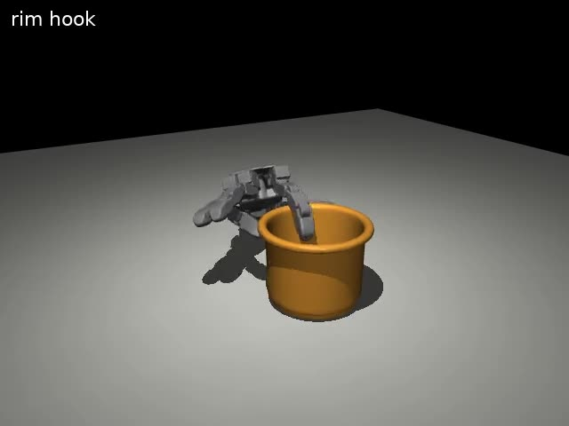
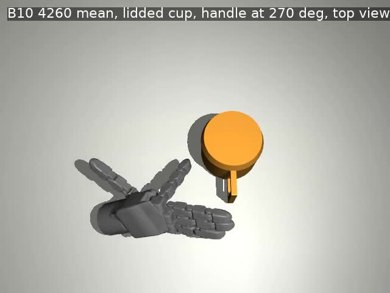

An object’s hidden geometry may affect how it should be grasped. POgrasp asks whether contact can update a belief over plausible shapes and help a dexterous hand choose a better action.

Open cup. A learned rim grasp on a training object.

Lidded cup. A learned handle-directed approach with the true handle direction supplied.
These are selected rollouts from the same two-object policy checkpoint. They show learned behaviors, not generalization or average performance. The accompanying project page contains the original videos, including an earlier body-pinch shortcut.
| Separate recorded comparisons | Provided | Zeroed |
|---|---|---|
| Can and open cup: shape-summary channels | 32/32 each | 32/32 each |
| Lidded cup: handle-direction channels | 22/32 | 10/32 |
Each row compares the same checkpoint on the same 32 placements using mean actions. Success: a supported lift of 10 cm held for 2 seconds. The rows are different experiments; the images above are from a later checkpoint. Zeroing inputs can create unfamiliar observations, so the comparison shows input sensitivity rather than proof of general shape understanding.
An initial contact-history estimator did not reliably replace the true handle direction. It also received privileged object displacement and shape summaries. This result motivates testing informative contact and a visual prior; it does not establish that contact is generally insufficient.
The proposed comparison requires repeated simulation-based training, baseline runs and evaluation. Shared lab GPU access is suitable for small pilots but makes sustained comparisons difficult to schedule. The initial object comparison is the minimum study; the broader evaluation depends on available resources.
The intended outputs are a controlled comparison, experiment configurations, evaluation procedures and an analysis of where the approach helps or fails. Improved grasp performance is a hypothesis to test, not a promised result.
The work is intended for a research paper and a Master’s thesis, with CoRL as a target venue and ICRA another possibility depending on the final results. Code and permitted reproducibility materials are planned for release after paper publication.
The pilots use a simulated DG-5F hand with a floating wrist and small trained object sets. They do not demonstrate a complete vision-and-touch policy, real-robot performance, an equivariant belief implementation or superiority over published baselines. Some successful lifts use a body-pinch shortcut, and the hand motions are not yet natural.
Shape-summary masking: internal record WALL_B_2026-09-17, B4 update 1620. Handle-direction masking: WALL_C_DESIGN_2026-09-19, B7 update 3660. Images: B10 update 4260. History-estimator findings: B12 v2, reviews 4620–4920. The accompanying evidence.json records the counts and media hashes. Original experiment artifacts are retained; this brief is not a fresh reproduction.